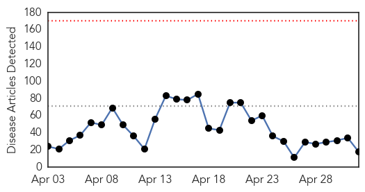

Ebola
30-Day Web Trend
0 alerts, 0 warnings

30-Day Twitter Trend
0 alerts, 0 warnings

Article Locations

Article Confidences

Top Articles:
- 1.000
- Woman may have caught Ebola after having sex with survivor in Liberia
- 1.000
- Tarrant County man with symptom tests negative for Ebola
- 0.999
- Ebola Transmission Possible Via Sexual Intercourse
- 0.998
- Ebola test comes back negative on Tarrant County man
- 0.998
- Report: 5 months after infection, man spreads Ebola via sex
- 0.998
- Ending ebola before rainy season is imperative – New Acting Head of UNMEER « Awoko Newspaper
- 0.996
- Liberian Woman Contracted Ebola Through Unprotected Sex
- 0.981
- Woman may have gotten Ebola after sex with survivor
- 0.969
- Ebola : Argentina to ship more drugs to Sierra Leone
- 0.959
- Tarrant County Resident Monitored For Ebola
- 0.948
- Jim Inhofe: A call to support those orphaned by Ebola in West Africa
- 0.936
- Sierra Leone wraps up four-day health and vaccination campaign
- 0.935
- Back to School After the Ebola Outbreak - Sierra Leone
- 0.873
- “Salone will be better after ebola” – President Koroma vows « Awoko Newspaper
- 0.785
- LIBERIA: US Envoy Extols USPHS For Restoring Hope In Health Workers
- 0.641
- IS MEDECINS SANS FRONTIERESSUPERSEDING UNITED NATIONS AGENCIES?
- 0.632
- PopeCrimes& Vatican Evils.FRANCIS=CON-Christ BenedictXVIRatzingerCrimesAgainstHumanityatTheHague: Dumping Dolan! Le Moyne grads must succeed like La Sapienza Univ. students who rejected Benedict XVI-R
- 0.552
- Sierra Leone university holds ceremony amid Ebola fears
Top Tweets:
- 0.591
- Tarrant Co. resident tests negative for Ebola - WFAA http://t.co/ZlXIXszPmK ebola EVD
- 0.532
- Woman in Liberia 'caught Ebola after sex with survivor 6 months later' - Daily Mail http://t.co/wzNatoL6RR ebola EVD
- 0.515
- Two areas Forécariah in Guinea and Kambia in SierraLeone account for 76% of all Ebola cases reported in week to April 26. EbolaResponse